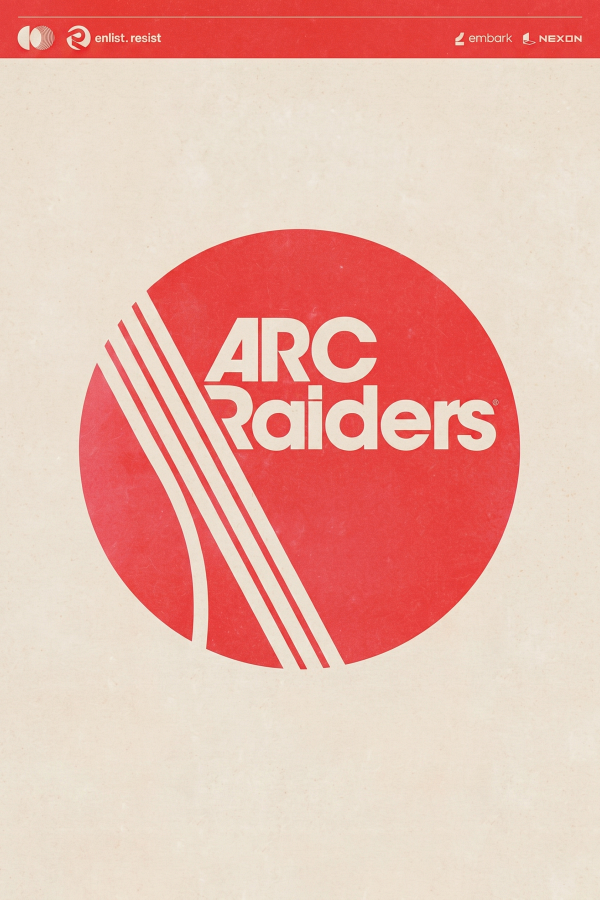

Arc Raiders
Every archived year-end list appearance, including placement and points earned.
About the Game
ARC Raiders is a free-to-play, reimagined, cooperative action shooter that offers an intense struggle in every session: together with your squad, defend our home and resist the onslaught of ARC – a ruthless mechanized threat descending from space. You play as one of the Raiders, a rogue group of resistance fighters. With the help of a patchwork early warning system, you fight to protect our home against enemies dropping from orbit. ARC is faceless and unfeeling, but no one could accuse ARC of being unresponsive. In fact, ARC responds to resistance with ever-increasing destruction. Resist As a Raider, you know that defeating ARC requires more than simply pointing and shooting a gun, and more than one person trying to be a hero. When ARC is around, lone wolves never make it very far. As underdogs, we need to believe in something bigger than our own strength, in something unapologetically human. That’s why we come together. United amid the unlikelihood of success, what seemed implausible may just become the best course of action. So, by all means, come prepared and plan ahead, but sometimes you just have to wing it. Jump right into the fray in a free-to-play world. Scavenge the ruins of the past. Wield tools and gadgets to outsmart the enemy. Use on-the-fly tactics, your surroundings, and physics to your advantage. If you and your squad play well together, one day the stars may again become beacons of hope, instead of omens of oblivion. Reimagine the third-person shooter – Go beyond simply matching ammo to a weapon. Experience action where combat demands unrehearsed creativity. Reimagine cooperation – ARC pursues you relentlessly, but together you can overcome these faceless foes. Fight, flee, and fine-tune, shoulder to shoulder with your squad.
| Released | 2025-10-30 |
|---|---|
| Developer | Embark Studios |
| Publisher | Nexon, Embark Studios |
| Genres | Action |
| Platforms | PC, PlayStation 5, Xbox Series S/X |
Steam AchievementsMultiplayerFull controller supportAtmosphericCo-opOpen WorldThird PersonSci-fiOnline Co-OpSurvivalFree to PlayThird-Person Shooter
Where to Buy
Game information provided by RAWG.
Points by Year
List History
| Year | Source | List | Placement | Points |
|---|---|---|---|---|
| 2025 | Den of Geek | The Best Games of 2025 | 6 | 5 |
| 2025 | Dexerto | The 20 best games of 2025 | 3 | 6 |
| 2025 | ESPN | The 25 best video games of 2025 | Unranked | 3 |
| 2025 | Eurogamer | The 50 best games of 2025, ranked | 15 | 3 |
| 2025 | Game Informer | The Top Ten Games of 2025 | 6 | 5 |
| 2025 | GameSpot | The Best Games Of 2025 | Unranked | 1 |
| 2025 | Geeky Brummie | Top 50 Most Notable Games of 2025 | 13 | 3 |
| 2025 | Kotaku | The 12 Best Video Games Of 2025 | 6 | 5 |
| 2025 | Maxim | The Best Video Games of 2025 | 20 | 3 |
| 2025 | NPR | The best games of 2025, picked by NPR's staff | Unranked | 1 |
| 2025 | Polygon | The 50 best games of 2025, as chosen by Polygon | 47 | 1 |
| 2025 | Rolling Stone · Christopher Cruz | The 25 Best Video Games of 2025 | 10 | 5 |
| 2025 | SUPERJUMP | 50 Outstanding Games Released in 2025 | Unranked | 1 |
| 2025 | TechRadar | TechRadar Gaming’s Game of the Year list 2025: our top 20 games from this year | 10 | 5 |
| 2025 | The Review Geek | 15 Best Video Games of 2025 | TheReviewGeek Recommends | 13 | 3 |
| 2025 | The Ringer | The Best Video Games of 2025 | 10 | 5 |
| 2025 | Virgin Media O2 | The Best Video Games Of 2025 Revealed | Unranked | 3 |